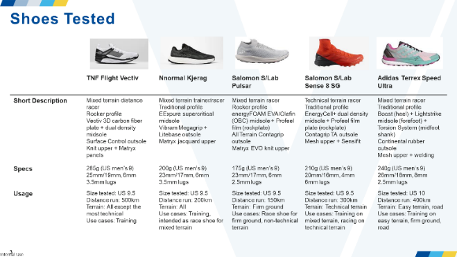
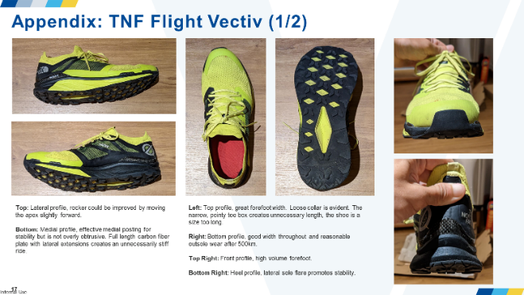
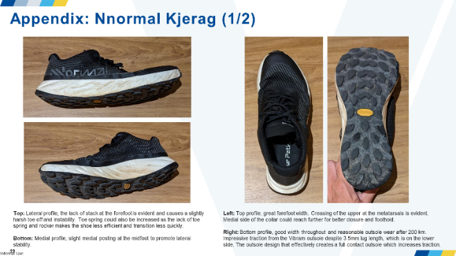
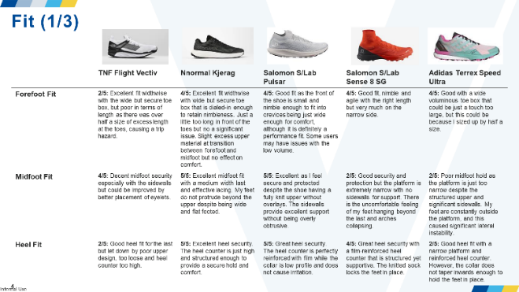
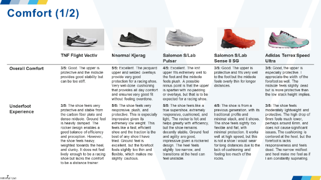
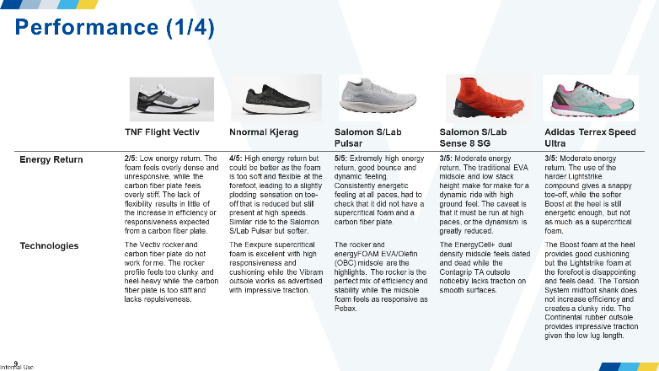

I created this wear test report on my own initiative to further my interest in performance footwear and to learn more about the wear-testing process. I saw a missed opportunity in the lack of wear testing against competitors and decided to contribute using my passion for trail running. I wear-tested the Flight Vectiv against 4 similar trail shoes from competitors over 6 months to develop a comprehensive feel for each product.
I developed an understanding of the wear-testing process and the key factors footwear development teams evaluate: fit, comfort, performance, and durability. While reviewing and referencing existing wear tests for The North Face, I learned more about the work that goes into product testing, and how a product testing analyst contributes to footwear development and innovation.





